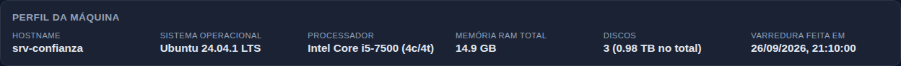
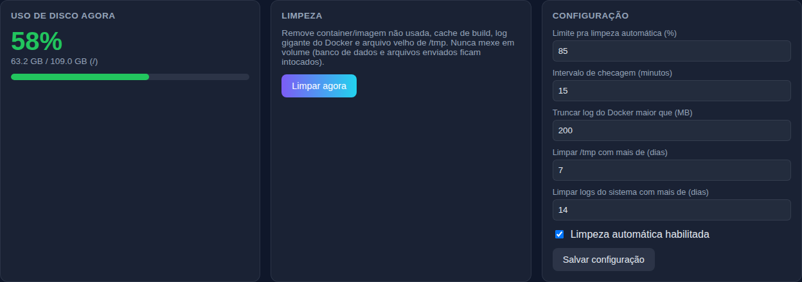
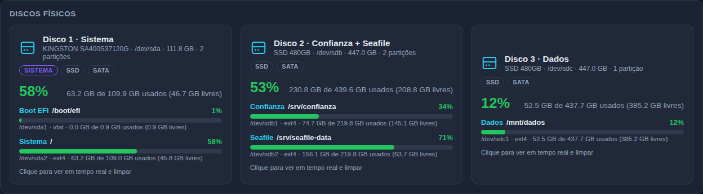
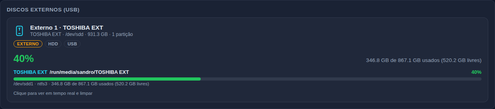
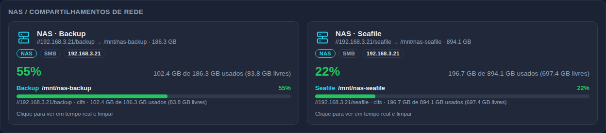
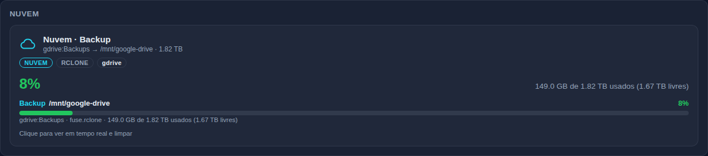
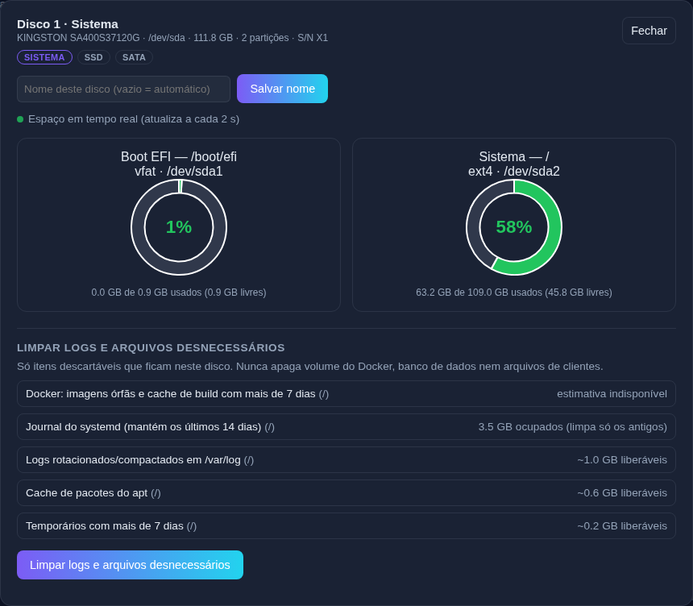
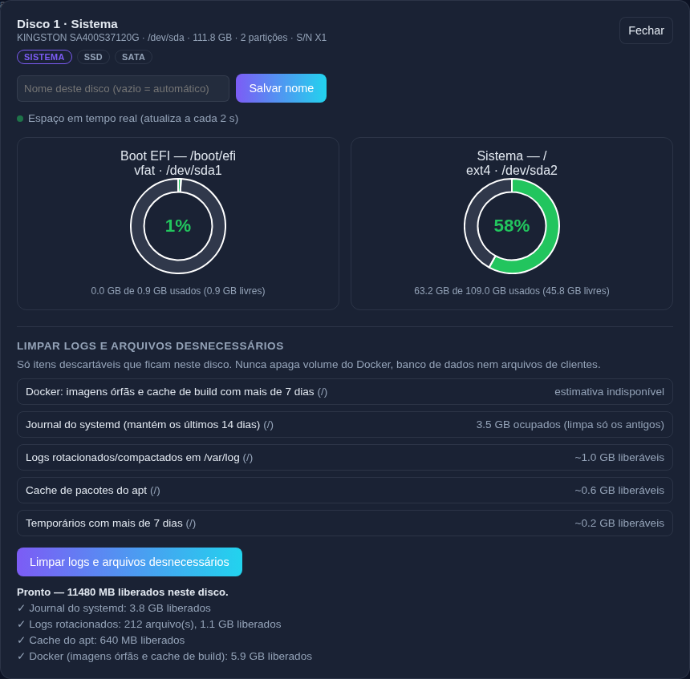
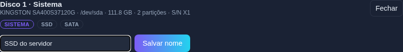
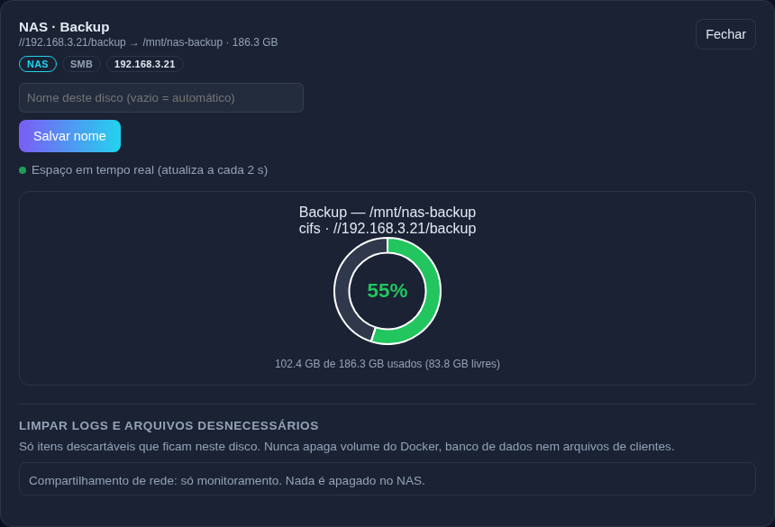

O Disk Monitor é um painel web que roda no próprio servidor (porta 8091) e serve para:
Ele é separado do AtendeFlow: não usa o banco de dados nem mexe nos dados do sistema de atendimento.
ssh -L 8091:localhost:8091 usuario@servidor e abrir http://localhost:8091)
ou por um proxy com autenticação. O login do painel é uma segunda camada de proteção, não a única.cd ~/atendeflow && git fetch origin claude/instagram-ai-agent-ivcyk4 && git merge --ff-only FETCH_HEAD cd ~/atendeflow/server-toolkit/disk-monitor && sudo installers/linux/update.sh
O script mostra a versão antiga e a nova (deve aparecer v1.7.1), instala dependências e reinicia o serviço
disk-monitor. Configuração, usuários e histórico (data/) são mantidos.
cd server-toolkit/disk-monitor sudo installers/linux/install.sh # modo texto sudo installers/linux/install-gui.sh # com janelas (se houver interface gráfica)
Na primeira subida, o sistema faz a varredura do hardware sozinho: descobre os discos físicos, as partições, o que é HD externo, os NAS e as nuvens montadas. Não é preciso cadastrar nada.
http://IP-DO-SERVIDOR:8091 e entre com o usuário administrador (definido no .env na primeira vez).De cima para baixo, o painel mostra:
| Bloco | Para que serve |
|---|---|
| Perfil da máquina | Ficha do servidor: hostname, sistema, processador, RAM, discos, data da varredura. |
| Uso de disco agora | Ocupação do disco do sistema (/), o disco que dispara a limpeza automática. |
| Limpeza | Botão Limpar agora: limpeza geral do servidor (a mesma da automática). |
| Configuração | Limite da limpeza automática, intervalo de checagem e idades mínimas dos arquivos. |
| Histórico de uso de disco | Gráfico da ocupação do disco do sistema ao longo do tempo. |
| Discos físicos · Externos (USB) · NAS · Nuvem | Um card por disco ou compartilhamento, separados em grupos. Clique para abrir o detalhe. |
| CPU / Memória RAM em tempo real | Gráficos ao vivo (amostra a cada 5 segundos). |
| Processos em tempo real | Os 15 processos que mais usam CPU, com gráfico de consumo. |
| Últimas limpezas | Quando, tipo (automática/manual), uso antes e depois, espaço liberado e detalhes. |
| Usuários | Só para administradores: criar e remover acessos. |

É uma "foto" do hardware tirada na instalação — por isso não fica mudando sozinha. Em Discos conta só os discos físicos internos (HD externo, NAS e nuvem não entram) e soma a capacidade deles.
sudo rm ~/atendeflow/server-toolkit/disk-monitor/data/machine-profile.json sudo systemctl restart disk-monitor

Mostra a ocupação da partição do sistema (/). A partir da v1.7.1 o valor é lido na hora e atualizado
a cada 5 segundos, com a mesma conta do card do disco — então ele sempre bate com a linha
Sistema / do Disco 1, inclusive logo depois de uma limpeza.
A conta é a mesma do comando df -h do Linux: usado ÷ (usado + livre). O pequeno espaço que o Linux
reserva para o administrador (cerca de 5% em discos ext4) não entra como "usado".
Roda a limpeza do servidor inteiro, a mesma que roda sozinha quando o disco do sistema passa do limite. Para limpar só um disco e ver antes o que vai ser apagado, use o painel do disco (seção 8).
Altere os campos e clique em Salvar configuração (só administrador); vale na hora, sem reiniciar.
| Campo | O que faz | Padrão |
|---|---|---|
| Limite pra limpeza automática (%) | Quando o disco do sistema chegar nesse valor, a limpeza roda sozinha. | 85% |
| Intervalo de checagem (minutos) | De quanto em quanto tempo o sistema verifica o limite e grava um ponto no histórico. | 15 |
| Truncar log do Docker maior que (MB) | Zera o log de um container que passar desse tamanho (o arquivo continua existindo). | 200 |
| Limpar /tmp com mais de (dias) | Idade mínima para apagar temporários e itens da lixeira. | 7 |
| Limpar logs do sistema com mais de (dias) | Logs do systemd (journal) mais antigos que isso são descartados. | 14 |
| Limpeza automática habilitada | Liga/desliga a limpeza automática sem reiniciar o serviço. | ligada |
O painel lê o hardware do servidor (comando lsblk) e os pontos de montagem, e separa tudo em
quatro grupos. Camadas internas do Docker (overlay), efivarfs, tmpfs e similares
não aparecem — elas não são discos.
Os HD/SSD instalados dentro da máquina. Cada card é um disco, com as partições dentro.

Aparecem sozinhos quando um HD/pendrive é plugado e somem quando ele é retirado.

Pastas de outro equipamento montadas pela rede (SMB/CIFS, NFS, SSHFS). O card mostra o endereço do NAS e a pasta:
//192.168.3.21/backup → /mnt/nas-backup.

Armazenamento em nuvem montado como pasta no servidor: Google Drive/OneDrive/Dropbox via rclone, S3, Nextcloud (davfs), etc. Este grupo só aparece se houver alguma nuvem montada.

findmnt -t cifs,nfs,nfs4,fuse.rclone.
Se não estiver montado (ex.: NAS desligado), ele não aparece — e volta sozinho quando for montado de novo.Cada card tem um título (nome automático ou o nome que você der), uma linha técnica e etiquetas:
| Parte | Exemplo | O que significa |
|---|---|---|
| Título automático | Disco 2 · Confianza + Seafile | Número dentro do grupo + papel das partições. |
| Linha técnica | SSD 480GB · /dev/sdb · 447.0 GB · 2 partições | Modelo, dispositivo no Linux, tamanho real, quantidade de partições. |
| Etiquetas | SISTEMA · SSD · SATA · EXTERNO · USB · NAS · SMB · NUVEM | Disco do sistema, tipo (SSD/HDD/NVMe), conexão e grupo. |
| No detalhe | S/N X1 | Número de série do disco (para achar o disco físico na máquina). |
A numeração é por grupo: Disco 1, 2, 3 (internos — o do sistema é sempre o 1), Externo 1, 2…, e NAS/Nuvem pelo nome da pasta.
Detectado sozinho pelo local onde a partição está montada e pelo rótulo dela:
| Papel | Quando aparece |
|---|---|
| Sistema | Partição raiz / (ou C: no Windows). |
| Boot EFI / Boot | /boot/efi e /boot — arquivos de inicialização. |
| Seafile | Pasta ou rótulo com "seafile" (ex.: /srv/seafile-data, /mnt/nas-seafile). |
| Confianza | Pasta ou rótulo com "confianza"/"confiança" (ex.: /srv/confianza). |
| Backup | Pasta ou rótulo com "backup"/"bkp" (ex.: /mnt/nas-backup). |
| Docker · Home | Pastas do Docker e /home. |
| Swap | Memória virtual (não tem "espaço usado" para mostrar). |
| Livre (não montada) | Partição que existe no disco mas não está em uso por nenhuma pasta. |
| Outro nome | Nos demais casos usa o rótulo da partição ou o nome da pasta (ex.: /mnt/dados → "Dados"). |
Clique em qualquer card para abrir o painel do disco. Ele mostra cada partição com um gráfico de rosca, atualizado a cada 2 segundos enquanto o painel estiver aberto.

A lista mostra só o que fica neste disco, com o tamanho estimado. Os itens possíveis são:
| Item | O que é apagado |
|---|---|
| Docker | Só imagens órfãs (sem nome) e cache de build com mais de 7 dias. Nunca container, volume ou imagem de serviço. |
| Journal do systemd | Logs do sistema mais antigos que o configurado (padrão 14 dias). |
| Logs rotacionados | Logs antigos já compactados em /var/log (.gz, .1, .old…). |
| Cache do apt | Pacotes de instalação já baixados (apt-get clean). |
| Temporários | /tmp e /var/tmp com mais de 7 dias. |
| Lixeira | Arquivos já apagados que ficaram na lixeira do disco há mais de 7 dias. |

Serve para dar um nome seu a um disco, HD externo, NAS ou nuvem, no lugar do nome automático. É só um apelido para facilitar a identificação — não mexe no disco, não formata, não renomeia pasta nem partição no Linux.

| Situação | Resultado |
|---|---|
| Campo vazio (padrão) | Usa o nome automático: Disco 1 · Sistema, NAS · Backup… |
| Nome preenchido e salvo | Mostra o seu nome. As etiquetas e a linha técnica continuam aparecendo. |
| Apagar o texto e salvar | Volta ao nome automático. |
O nome fica guardado em data/config.json (campo diskNames) e é ligado ao número de série
do disco — se o disco mudar de /dev/sdb para /dev/sdc (ou o HD externo for plugado em outra porta),
o nome continua certo. Para NAS e nuvem, o nome é ligado à pasta onde estão montados. Até 60 caracteres.

/mnt/nas-backup continuam sendo gerenciados pelo script de backup do AtendeFlow (retenção de 30 dias).| Papel | Pode |
|---|---|
| Administrador | Tudo: limpar (geral e por disco), salvar configuração, dar nome aos discos, criar e remover usuários. |
| Visualizador | Só acompanhar: vê discos, detalhes em tempo real, a lista do que seria limpo, histórico e limpezas. Botões de ação ficam desabilitados e o campo de nome não aparece. |
Para criar um acesso: seção Usuários no fim da página → usuário, senha, papel → Criar usuário. Não é possível remover o próprio usuário logado nem o último administrador.
Na versão 1.7.0, o card Uso de disco agora mostrava a última checagem agendada (a cada 15 minutos), não o valor do momento. Por isso ele só se atualizava na checagem seguinte. Além disso, usava uma conta que incluía como "usado" o espaço reservado pelo Linux. Corrigido na 1.7.1: o card agora é lido na hora, atualiza a cada 5 segundos, usa a mesma conta dos discos e muda logo depois da limpeza. O histórico também ganha um ponto novo na hora.
Porque logs, cache e temporários do sistema ficam no disco do sistema (Disco 1). Os discos de dados guardam arquivos de clientes, que o painel nunca apaga. Veja o quadro verde da seção 8.
O fabricante conta 1 GB = 1.000.000.000 bytes; o sistema conta em múltiplos de 1024. Um disco de 480 GB tem ~447 GB "de sistema". Além disso, o sistema de arquivos ocupa uma pequena parte.
Ele aparece quando está plugado e reconhecido pelo Linux (confira com lsblk). Se estiver plugado mas não
montado, o card aparece com a partição como "Livre (não montada)".
O papel é deduzido pelo nome da pasta de montagem. Se a pasta tiver outro nome, dê um nome próprio ao disco com Salvar nome (seção 9).
A ficha é da instalação. Refaça a varredura (seção 4).
| Para… | Comando |
|---|---|
| Ver se o serviço está rodando | sudo systemctl status disk-monitor |
| Reiniciar o serviço | sudo systemctl restart disk-monitor |
| Ver os últimos logs | sudo journalctl -u disk-monitor -n 50 --no-pager |
| Conferir a versão instalada | Etiqueta no topo do painel (ex.: v1.7.1) |
| Ver os discos como o painel vê | lsblk -o NAME,SIZE,TYPE,MODEL,TRAN,MOUNTPOINT |
| Ver o espaço como o painel calcula | df -h / |
| Ver NAS e nuvens montados | findmnt -t cifs,nfs,nfs4,fuse.rclone,davfs |
| Refazer a varredura do hardware | Apagar data/machine-profile.json e reiniciar |
SESSION_SECRET no .env,
o log informa. Depois de corrigir, reinicie o serviço.df -h).